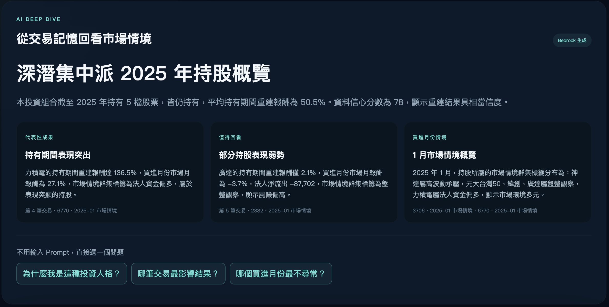

離開看盤節奏、組織 Prompt，才開始得到價值。
認知成本CMONEY × AWS AI HACKATHON · 2026
想知道用戶
手上抱著什麼？
先別問他。
Mindfolio 用一趟 2025 投資時光機，先讓陌生用戶看見自己，再換回第一筆本人確認的持股關係。
THE BEHAVIORAL BARRIER
ChatGPT 已經做過，
但用戶不會一直對話。
截圖、對帳單、成本股數，都要求尚未建立的信任。
信任成本完整建庫與維護很麻煩，還沒看見價值就流失。
操作成本突破點不是做更會聊天的 AI，而是設計「不必聊天，也能持續取得資料」的互動。
CORE INNOVATION · REVERSE ONBOARDING
先給價值，
再逐層交換資料。
0自由 Prompt0資產截圖0券商串接1明確持股同意
LIVE DEMO · 03:00
不是概念稿，
現在就在 AWS 上運作。
Live：http://34.229.72.35邀請碼：123456／000000React + FastAPI + PostgreSQL + Bedrock
TECHNICAL MOAT
把模糊記憶，
重建成可驗證的投資事件。
金融真相由 deterministic engine 計算；同輸入必定同輸出，LLM 無權改寫數字。
CMONEY DATA → PRODUCT ASSET
CSV 不只拿來畫圖，
而是產品計算與 AI 的共同地基。
2025 DAILY CSV→
社群資料是全站股票層彙總，不冒充 LEO 的個人情緒；官方資料沒有真實持股標籤，因此不虛構「持股預測模型」。
AI THAT KNOWS ITS JOB
AI 分兩層，
各自只做擅長的事。

PRODUCTION-MINDED ARCHITECTURE
完整閉環已上線，
不是只有模型 Notebook。
EXPERIENCEReact + TypeScript6 routes · Zero Prompt journey · Portfolio Radar
HTTP / JSON CONTRACTAPPLICATIONFastAPI + Pydantic14 API · Ownership · Consent · Cache · Guardrails
BUSINESS FLYWHEEL
一次人格體驗，
轉成可持續的持股資料資產。
Start→Complete→Share→Claim→Verified Holding Activation→D7 Return
North Star：完成重建、明確同意，並至少確認 1 檔持股的人數。
WHY MINDFOLIO
三分鐘的時光機，
換來 第一筆本人確認的持股關係。
30%創新反向 Onboarding
25%AIML + Bedrock Live
20%資料三類 CSV → 產品
15%完整閉環已上線
10%可行Fail-soft 架構
我們不是打造另一個 ChatGPT；而是讓不想聊天的投資人，也願意被 AI 理解。